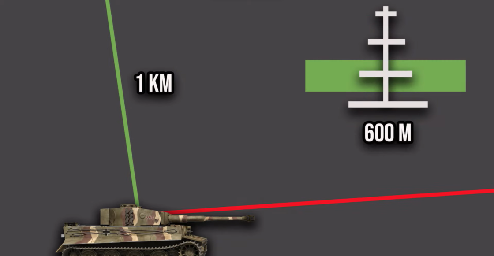

- Alors pour la visée roquette, elle est constituée de 4 lignes horizontales, chacune correspond à 200m d'écart en
partant de 200m jusqu'à 800m comme indiqué sur l'image ci-dessus. Ces valeurs sont valables uniquement si
vous êtes quasiment parallèle à votre cible comme dans l'image ci dessous représenté par la ligne verte.
- Si vous êtes en piqué sur votre cible, pour 1km d'altitude sur votre cible il faudra utiliser la barre des 600m
(illustrée en vert ci-dessous).
